Uma vez na área administrativa dos setores ou dos Departamentos, você acessa diretamente o estoque de demandas recebidas, sem ainda terem sido “VISUALIZADA”s, clicando no widget roxo, com o rótulo "RECEBIDAS”.
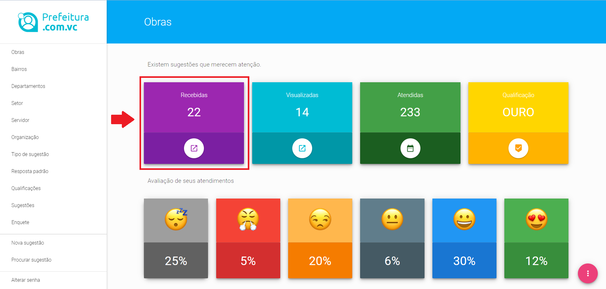
Dashboard para encaminhamento da solução das demandas
Esse Widget (retângulo na parte superior da tela) pode estar piscando, no caso dele conter sugestões recebidas, sem ter sido ainda “VISUALIZADA”s pelo encarregado.
Como a sugestão está organizada
Uma vez clicado o widget “RECEBIDAS” você verá o estoque de solicitações de sua responsabilidade feitas pelos cidadãos.
Estas demandas estarão organizadas por quantidade de demandas de mesmo tipo e mesmo endereço.
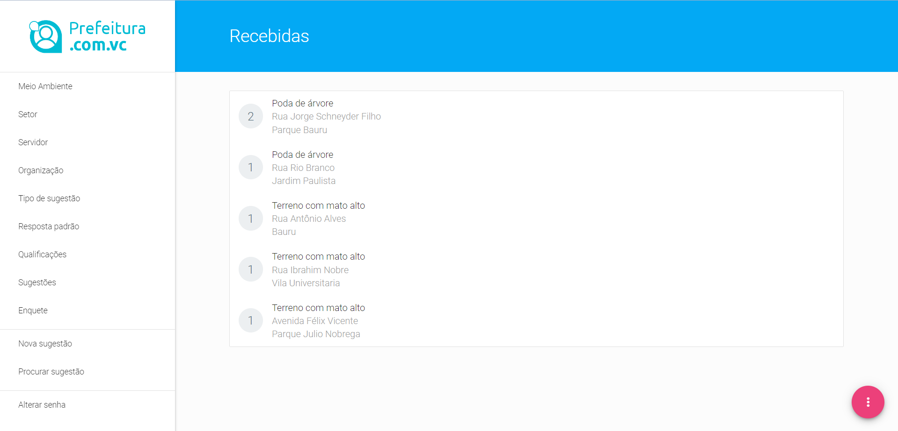
Organização da tela de sugestões
Isto é feito para que você possa escolher atender as demandas mais pedidas pelos munícipes como forma de gastar os recursos atendendo mais gente.
Ao receber uma sugestão por parte do cidadão, você clica no Rótulo Tipo da Demanda, na frente do ícone com a quantidade de cidadãos que fizeram a mesma ocorrência. Depois de seu clique, a tela se abrirá para um detalhamento da ocorrência, mostrando a descrição feita pelo cidadão, a data e horário da ocorrência, a fotografia da mesma.
No caso de você clicar em uma demanda com vários pedidos de cidadãos diferentes, você verá o detalahmento de todas as ocorrências englobadas neste quesito.
Reclassificando o tipo de uma sugestão.
Pode acontecer que ao efetuar a ocorrência através do Aplicativo ou do Assistente Virtual, o cidadão tenha escolhido errado o tipo de sugestão em docorrência de inabilidade na operação do celular ou pela dificuldade de leitura, etc.
No caso acima, você irá identificar o equívoco pela divergência entre a fotografia e a descrição da ocorrência e a classificação da mesma feita pelo munícipe.
A plataforma Prefeitura.com.vc tem uma funcionalidade para permitir que você reclassifique o tipo de sugestão para que a mesma seja tratada pelo setor correto.
Assim, para você reclassificar a sugestão do munícipe para outro tipo, você clica no Check Box (Caixa de seleção ao lado da miniatura da foto), clica nas duas setinhas, posicionadas a direita da descrição do cidadão
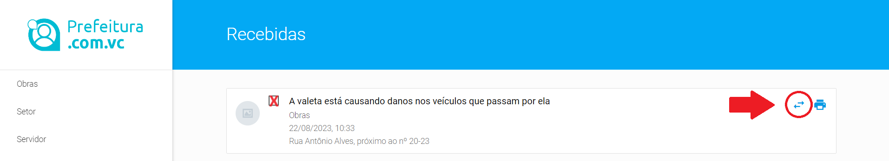
Reclassificando sugestões
Ao clicar em uma caixa de diálogo se abrirá contendo a relação de todas as sugestões cadastradas no sistema, de todos os departamentos, todos os setores, estando elas ativas ou inativas. Seu trabalho será escolher um "Tipo de sugestão" compatível com a intenção do cidadão tinha considerando sua descrição e/ou foto e clicar no botão ENVIAR que aparece no cnto inferior dessa caixa de diálogo.
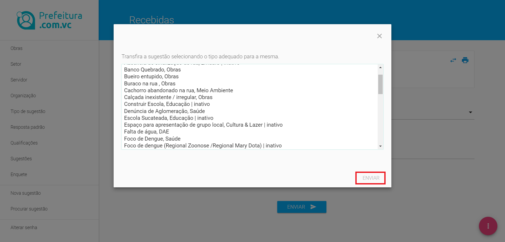
Escolhendo o novo tipo de sugestão
Ao fazer isso, essa ocorrência tem o seu tipo alterado e pode inclusive sair de seu setor ou departamento, no caso do tipo correto de sugestão estiver sob a responsabilidade de outra unidade gestora; deixando de figurar nas estatísticas de sua responsabilidade e aparecendo no setor correto como se o cidadão tivesse originalmengte encaminhado diretamente para lá.
Desconsiderando uma sugestão
Uma outra exceção se dá quando você recebe uma ocorrência, baseada num tipo correto de sugestão, encaminhado para o setor ou departamento correto, porém fora da capacidade de resolução da prefeitura municipal, por exemplo em virtude da jurisdição ser do estado ou da federação, ou em decorrência da resolução estar pendente por motivos judiciais, ou ainda por depender de processos licitatórios cujo desfecho demore muito tempo, etc.
Neste caso, para você desconsiderar a sugestão do munícipe, você clica no Check Box (Caixa de seleção ao lado da miniatura da foto), clique no campo “Selecione uma resposta padrão” e verifique se já foi gravada uma resposta do tipo DESCONSIDERAR.
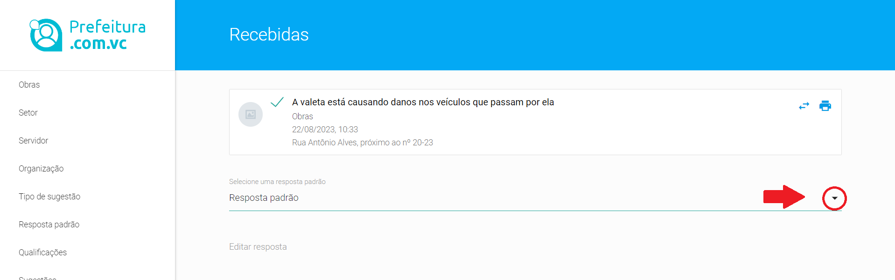
Tela para escolher Tipo de Resposta
Ao clicar na caixa de seleção “Selecione uma resposta padrão” o sistema apenas te mostrará respostas padrão do tipo “VISUALIZADA”S e “DESCONSIDERADA”S. Você identificará uma respostas “DESCONSIDERADA” pelo conteúdo da mesma.
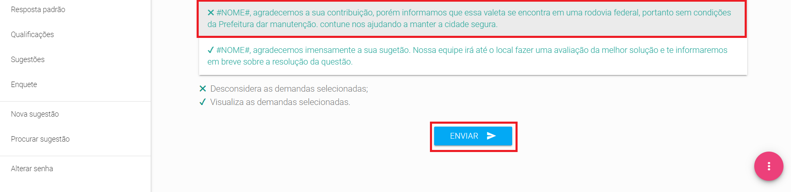
Escolhendo a Resposta Padrão para desconsiderar a sugestão
Escolha a resposta do tipo “DESCONSIDERADA”, o mesmo conteúdo será repetido no campo abaixo, “Editar a resposta”. Aqui nesse campo você pode alterar o conteúdo da resposta de modo a deixa-la mais explicativa para o cidadão, se for necessário.
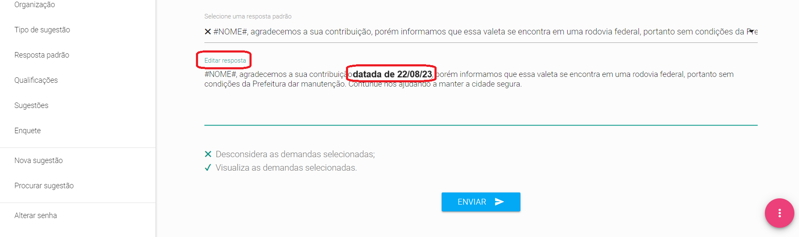
Tela para Edição da Resposta Padrão
Após a edição, se necessária, como o texto da resposta definido, clique no botão ENVIAR,para o cidadão receber a resposta em seu aplicativo para dispositivos móveis e a mesma ser retirada do fluxo de trabalho de seu setor, sendo que a mesma entrará para a estatística de demandas desconsideradas.
ATENÇÃO: Se você não localizou nenhuma resposta padrão do tipo “DESCONSIDERADA”, você deve ir ao menu "Resposta padrão" e inserir uma, conforme explicação acima, dessa tarefa. O sistema não processa nenhuma resposta apenas escrita no campo “Editar a resposta”, é necessário que tenha sido registrada previamente uma resposta padrão daquele tipo.
Editando uma Resposta padrão
A edição de uma resposta padrão se dá simplesmente alterando-se o conteúdo da Resposta Padrão gravada previamente na linha “Editar Resposta”.
Para alterar o texto da resposta previamente gravada, é necessário que você esteja na tela de visualização de sugestão.
Escolha uma das demandas, clicando no título da mesma. Clique na seta de seleção de respostas, escolha o tipo de resposta mais convenienete para o seu caso.
O sistema prefeitura.com.vc já facilita a sua edição, repetindo o conteúdo da "Resposta padrão" que foi selecionada por você para que você possa apenas alterar uma parte do conteúdo. Entretanto, se for necessário alterar completamente a mensagem, essa alteração se dá da mesma forma.
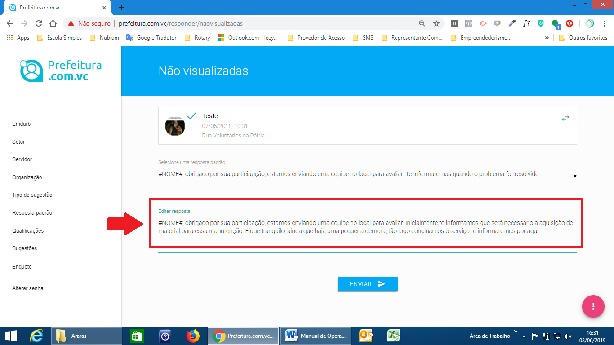
Tela para Edição da Resposta Padrão
Ao final da alteração de sua resposta da forma mais conveniente, clique no botão ENVIAR para essa demanda mudar de status no sistema, indo para o estágio de resolução posterior, bem como para o cidadão receber sua resposta, com o conteúdo original da "Resposta Padrão" alterado por você.
Emitindo uma Ordem de Serviço
Assim que você visualiza uma sugestão, escolhe a prioridade de atendimento, segundo os critérios ditados pela administração, responde a mesma para o cidadão, você completa o primeiro estágio de solução e a referida ocorrência é transferida para o status VISUALIZADA.
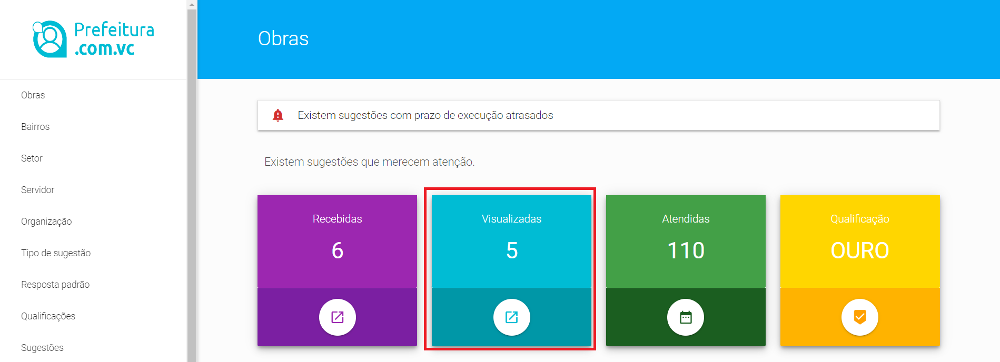
Dashboard do sistema
O próximo passo é clicar no Widget Azul, “VISUALIZADAS”, localizar a sugestão escolhida, clicar no titulo da mesma, ao lado do númereo correspondente à quantidade de solicitações daquela demanda, para abrir o detalahamento da mesma.
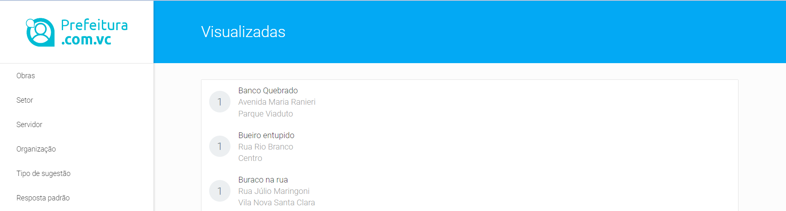
Tela para tratamento de Sugestões visualizadas
Com a tela de detalhamento da ocorrência aberta, conforme abaixo, clicar na caixa de seleção ao lado da miniatura da foto da ocorrência (cheque box) e clicar no ícone de impressora à direita da sugestão.
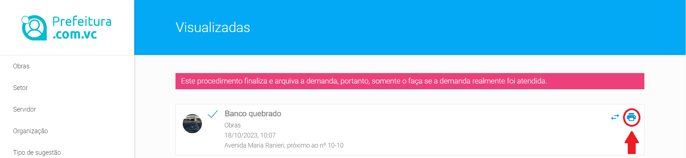
Tela para gerar Ordem de Serviço
Ao proceder da forma acima, o sistema gerará uma Ordem de Serviço. Esse documento contém todas as informações necessárias para a equipe de operação planejar e executar a demanda necessária para solucionar a ocorrência aberta pelo cidadão, tais como, fotografia tirado no locoal, mapa contando a localização da demanda, endereço, descrição efetuada pelo munícipe autor da sugestão
O referido documento poderá ser impresso ou encaminhado por e-mail ao pessoal de operação, que deverá resolver a demanda com suas equipes de rua, conforme rotina de sua Prefeitura Municipal.